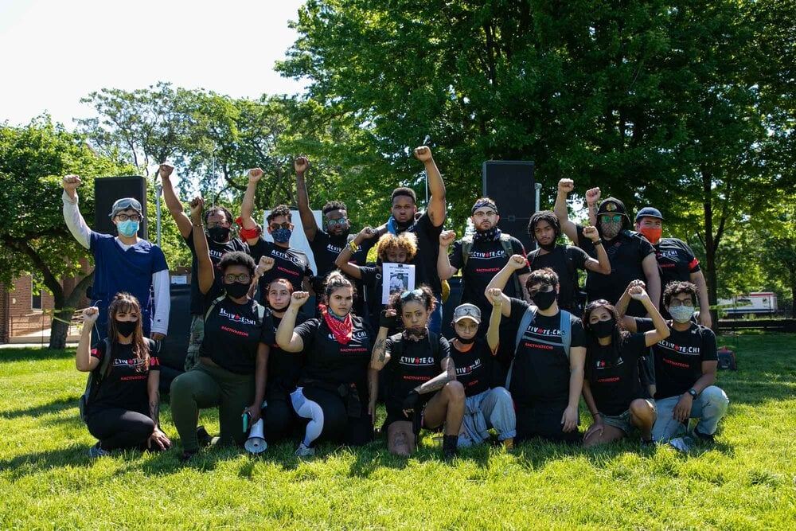
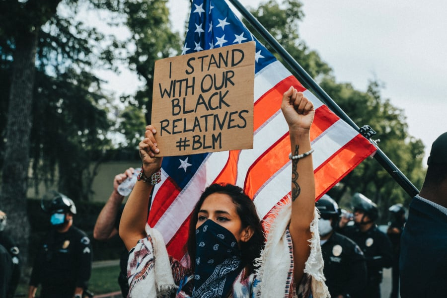
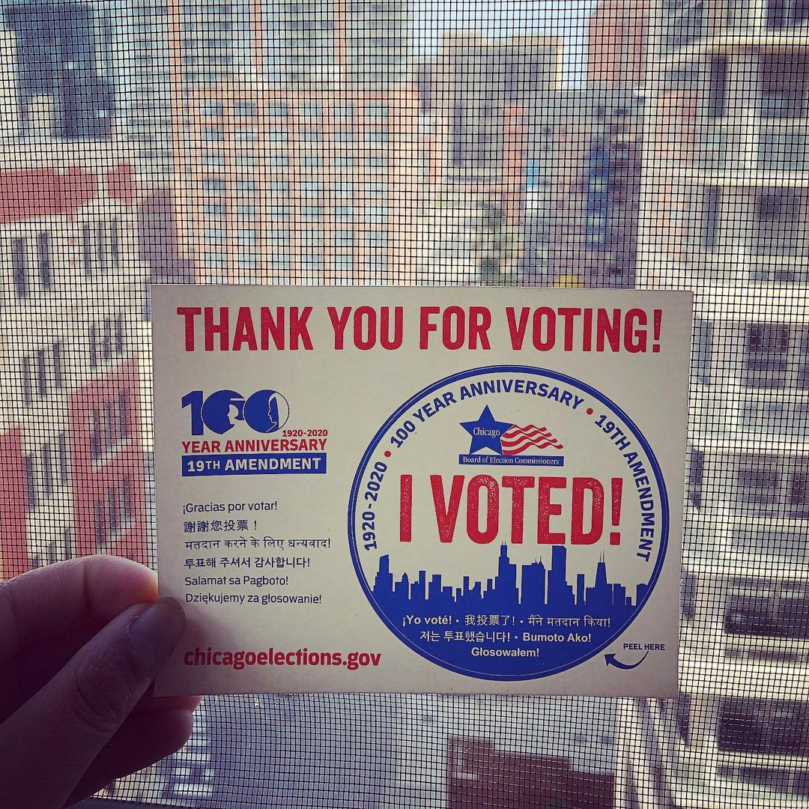

  
Activate:Chi believes that everyone can and should be an activist for the causes they are most passionate about.
About Activate:Chi
We focus on grassroots organizing because we believe the most meaningful change stems from the people. Our primary strategy is to connect passionate individuals with the resources and opportunities they need to be educated and purposeful advocates.
Read our history- Our mission
- Activate people to purposefully pursue and advocate for the social, economic, and political causes they are most passionate about.
- Our vision
- A people that have the resources and opportunity to be thoughtful and educated advocates for a more just, equitable, and accountable world.
Our organizers
Our leadership team and members have the passion and dedication to take on the many challenges we face in the city of Chicago.

Casandra Paiz
Director of Legal Affairs
Casandra is a Guatemalan activist who pursues justice in all forms. She believes that human rights are given through all aspects of society, and fights for that change. Casandra is a senior at Bryn Mawr College where she focuses her work on indigenous environmental justice in Guatemala.
Getty Kasole
Director of Programs and Technology
Getty is a Congolese - American woman, a feminist, and a proud immigrant. Getty believes all humans have the right to life, education, freedom from persecution, and equitable opportunity. Professionally, Getty is the founder of a startup, SolAfrica, and consults for various actors in the renewable energy sector in Africa.
Stephen Barkan
Graphic Designer & Webmaster
He made this site.
Dom Brown
Director of Public Relations
Dom is a proud LGBTQ identifying black Chicago activist who seeks social justice and equality for all BIPOC. He's also a well known member of the community in Chicago where he's resided for over 15 years.
Sanjee Choudhuri
Director of Operations
Sanjee is a Bengali-American activist who has a passion for educational policy reform. He believes the long-term key to fighting racism and inequality is a fair and just education for all people. Professionally, Sanjee is a higher education consultant where he works with universities on strategy and technology implementations. He studied engineering and philosophy at the University of Michigan and graduated in 2019.